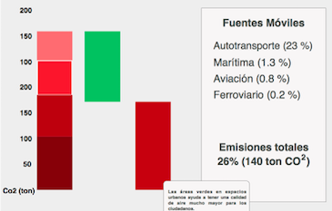

Cambio Climático
Los Científicos definen el cambio climático como "...todo cambio que ocurre en la cima a través del tiempo resultado de la variabilidad neutral o de las actividades humanas." El calentamiento global por su parte, es la manifestación más evidente del cambio climático y se refiere al incremento promedio de las temperaturas terrestres y marinas globales.
Inventario Nacional de la emisión de gases de efecto invernadero
5O País en Emisiones
1O País en incremento de temperatura
5O País en Emisiones
toneladas de emisiones de carbono al mes
de nuevas áreas verdes
toneladas de emisiones de carbono al mes
de nuevas áreas verdes
| Nombre | Dependencia | Fecha | Formato | |
|
Rezago habitacional por condiciones de espacio, materiales e instalaciones de la vivienda |
SEDATU | N/A | CSV |
|
|
Descripción Una vivienda se encuentra en rezago habitacional cuando no cumple con las condiciones mínimas de espacio, materiales e instalaciones necesarias para garantizar el pleno desarrollo de sus habitantes y el numero de cuartos es mayor a 2.5. Una vivienda está en rezago habitacional por materiales cuando el piso es de tierra los muros son de material de desecho, la lámina de cartón, de lámina de asbesto o metálica, de carrizo, bambú o palma, de embarro o bajareque, o de madera o tejamanil. Una vivienda está en rezago habitacional por instalaciones de cocina cuando el principal combustible utilizado para cocinar es leña o carbón y no se cuenta con chimenea. Una vivienda está en rezago habitacional por instalaciones sanitarias cuando no cuenta con excusado, retrete, sanitario, letrina u hoyo negro, de uso excesivo (no se compare con otra vivienda) al que se le pueda echar agua mediante descarga directa o con cubetas |
Desagregación Nacional;Estatal |
Desagregación Anual |
Años 2014.0 MÁS INFORMACIÓN |
El cambio climático que hoy enfrentamos está vinculado a la quema de combustibles fósiles, especialmente el carbón, gas y petróleo, y a la deforestación, es decir, a la pérdida de cobertura forestal. Ambos fenómenos tienen como consecuencia la excesiva emisión a la atmósfera de gases de efecto invernadero (GEI), mismos que están incrementando la temperatura del planeta
Emisiones de carbono (Co2) por sector de la economía
Explora
Selecciona un indicador:
2010
2011
2012
2013
2014
2015
| Nombre | Dependencia | Fecha | Formato | |
|
Rezago habitacional por condiciones de espacio, materiales e instalaciones de la vivienda |
SEDATU | N/A | CSV |
|
|
Descripción Una vivienda se encuentra en rezago habitacional cuando no cumple con las condiciones mínimas de espacio, materiales e instalaciones necesarias para garantizar el pleno desarrollo de sus habitantes y el numero de cuartos es mayor a 2.5. Una vivienda está en rezago habitacional por materiales cuando el piso es de tierra los muros son de material de desecho, la lámina de cartón, de lámina de asbesto o metálica, de carrizo, bambú o palma, de embarro o bajareque, o de madera o tejamanil. Una vivienda está en rezago habitacional por instalaciones de cocina cuando el principal combustible utilizado para cocinar es leña o carbón y no se cuenta con chimenea. Una vivienda está en rezago habitacional por instalaciones sanitarias cuando no cuenta con excusado, retrete, sanitario, letrina u hoyo negro, de uso excesivo (no se compare con otra vivienda) al que se le pueda echar agua mediante descarga directa o con cubetas |
Desagregación Nacional;Estatal |
Desagregación Anual |
Años 2014.0 MÁS INFORMACIÓN |